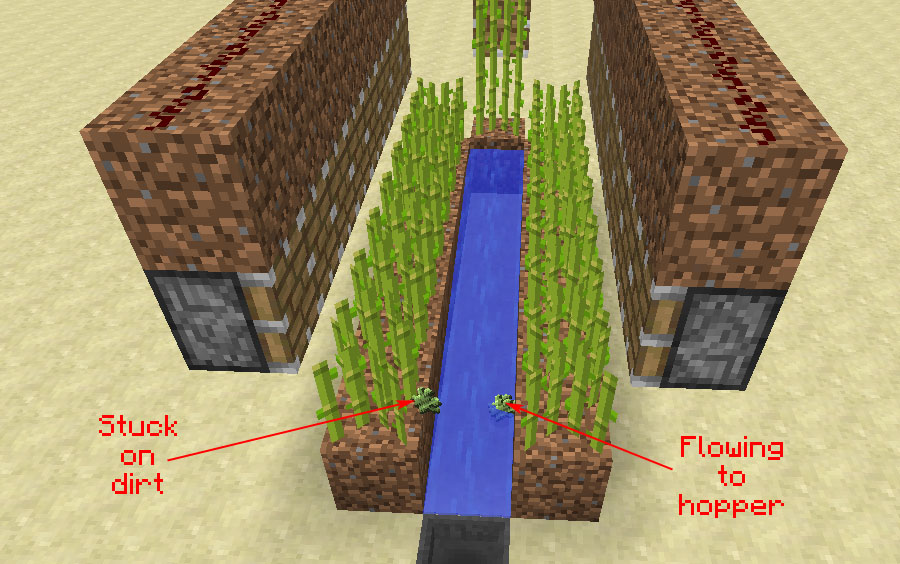

How to Farm Resources in Minecraft: A Comprehensive Guide
By: Milo
Introduction
Welcome to the ultimate guide on how to farm resources in Minecraft! If you're new to the game, you might find yourself struggling to gather the resources needed to build your dream house or craft the perfect weapon. Fear not, as this comprehensive guide will teach you everything you need to know about resource farming in Minecraft.
In this guide, we'll cover everything from basic farming techniques to advanced resource gathering strategies. Whether you're looking to mine for diamonds, farm for wheat, or breed livestock, we've got you covered. We'll also provide tips and tricks on how to optimize your resource gathering, increase your yield, and save time.
But first, let's go over why resource farming is so important in Minecraft. Resources are the backbone of the game, and they're critical for crafting, building, and surviving. Without resources, you won't be able to progress in the game or create the tools you need to defend yourself against mobs.
That being said, resource farming can also be a time-consuming and daunting task, especially for new players. But with the right techniques and strategies, farming can become a fun and rewarding part of the game.
So, buckle up and get ready to learn everything you need to know about farming resources in Minecraft. Get ready to master the game and unleash your inner builder, explorer, and adventurer!
ad space
What are Resources?
As any experienced Minecraft player knows, resources are the cornerstone of the game. They are the raw materials that you'll need to create anything from the most basic tools to the most elaborate structures. Without resources, you'll quickly find that you're unable to progress beyond the most rudimentary stages of the game.
But what exactly are resources? In Minecraft, resources are anything that you can use to create new items or structures. This includes everything from simple materials like wood and stone, to more rare items like diamonds and emeralds. Every resource in Minecraft has its own unique properties, and understanding them is the key to becoming a master of the game.
One important thing to keep in mind when farming resources in Minecraft is that not all resources are created equal. Some resources are more abundant than others, and some are much harder to obtain. As a result, successful resource farming requires a deep understanding of the game's mechanics and a willingness to experiment with different techniques and strategies.
So whether you're a seasoned player looking to take your game to the next level, or a newcomer just starting out on your Minecraft journey, this guide has everything you need to know about resources in Minecraft. From the basic materials you'll need to get started, to the rarest and most valuable resources in the game, we'll cover it all in-depth and provide you with the knowledge you need to be successful. So buckle up and get ready to explore the amazing world of resource farming in Minecraft!
ad space
Farming Techniques
Minecraft is a game that is loved worldwide not just for its creativity and boundless potential, but also for the satisfaction that comes from building a self-sufficient world. When it comes to surviving in Minecraft, farming resources is an essential part of gameplay. With the right techniques and strategies, players can grow their own food, gather raw materials, and craft valuable items.
To farm resources in Minecraft, players need to have a basic understanding of the game's mechanics and resource economy. In this guide, we will discuss some of the best farming techniques that players can employ to gather resources efficiently and sustainably. These techniques include creating a sustainable farm, using automated systems, and optimizing gameplay for maximum results.
Sustainable farming is crucial for long-term Minecraft gameplay. This involves considering not only the resources that are needed, but also the resources that are being used up over time. For example, players can choose to use renewable resources like wheat and carrots for food instead of hunting for wild animals. This strategy ensures that players have a steady supply of resources without damaging the environment.
Another technique that can be used is automation. Players can use automated systems like redstone contraptions to mine ores and gather resources without having to do it manually. This technique can save time and energy, allowing players to focus on building and exploring their Minecraft world.
Finally, optimizing gameplay is essential to maximize the amount of resources collected. This includes being mindful of where resources are located and using tools that are best suited for each task. For example, players can use a silk touch pickaxe to harvest specific ores and save them for later rather than using them immediately.
In conclusion, farming resources in Minecraft is an essential part of gameplay that requires both skill and strategy. By using sustainable farming practices, automated systems, and optimizing gameplay, players can efficiently gather the resources necessary to build and explore their Minecraft world.
ad space
Building a Farm
With new players joining Minecraft every day, it's essential to understand the importance of farming resources. In Minecraft, a farm can be anything that produces food, materials or useful items. Players need to build effective farms to survive and thrive in the game.
Building a farm requires us to consider several things like the location, design, materials, and tools needed. For successful farming, players will need to identify the right resources, plan the layout, and use the right techniques.
One of the primary resources that a player would want to farm is food, and it's also one of the easiest resources to farm. Players must ensure they have a good source of food to survive and thrive in the game. Farming materials such as wood, stone, and iron are important as well. These resources are used to make weapons, tools, and other essential components for the game.
Proper planning and design are the keys to building an effective farm. Beginners could start with a simple farm using basic materials such as wood and dirt. Once the basics are mastered, players can move on to more advanced designs and techniques.
Minecraft has several farming methods, such as crop farming, animal farming, and fishing. Each method requires a different approach and provides an opportunity for players to gain new resources. The farm's design would depend on the selected method and how the resources are to be harvested.
In conclusion, building an efficient farm requires an understanding of the desired resources, a strong plan, and the necessary tools and materials. With this knowledge, players can design and create an effective farm that will provide them with a steady supply of resources throughout the game.
ad space
Maximizing Resource Yield
If you're a seasoned Minecraft player, you know that resources are the lifeblood of the game. They are critical to surviving the harsh Minecraft world, building your creations, fighting off mobs, and working up to even more challenges. To farm resources effectively in Minecraft, you need to have a deep understanding of the different tools, techniques, and strategies available. In this guide, we will show you how to maximize your resource yields and get the most out of your time in the game.
The first step in maximizing your resource yield is to understand the different types of resources and how they spawn. Some resources, like iron, gold, diamonds, and emeralds, only spawn in specific types of blocks deep underground. Others, like wood, stone, and sand, are found on the surface and can be harvested with basic tools. Some resources, like food, can be farmed in the overworld using crops, animals, and fishing.
Another crucial strategy for maximizing resource yield is to use the right tools and techniques for each resource. For example, a Fortune enchanted pickaxe can significantly increase your yield when mining diamond or other rare ores. Building advanced villager trading systems can help you acquire valuable resources like mending books, totems of undying, and enchanted gear. Efficient mob grinders can provide you with a continuous supply of gunpowder, blaze rods, and other critical resources.
In summary, Minecraft is a game that rewards players who master the art of resource farming. By understanding the different types of resources available, how they spawn, and using the tools and techniques that suit them best, you can maximize your yields and achieve your Minecraft goals more efficiently. We hope that our comprehensive guide helps you to farm resources effectively and enjoy your time in the game. Happy mining, crafting, and farming!
ad space
Conclusion
In conclusion, farming resources in Minecraft is an essential aspect of the game that can either make or break your experience. The thrill of obtaining rare resources like diamonds, emeralds or netherite can be achieved by understanding the basics of farming resources in Minecraft.
Throughout this guide, we have explored various methods of acquiring different resources, including food, tools, weapons, and building materials. From gathering wheat, carrots or potatoes to breeding animals and creating automated farms, we have covered all there is to know about farming resources in Minecraft.
It is important to note that farming in Minecraft requires patience, time, and dedication. It may take hours, if not days, to gather enough resources to build massive structures, craft more tools or gear, and survive the harsh environments of the game.
However, with perseverance, the rewards of farming in Minecraft are fulfilling. You will be able to create your dream house, climb the ranks of the game's hierarchy, and challenge the most challenging bosses around.
In conclusion, Minecraft is a world of endless possibilities waiting for you to explore. By following the techniques presented in this guide, you will surely gain a new appreciation for farming in Minecraft and even masters the art of resource gathering in no time. So go ahead and dive back into the blocky world of Minecraft, and may you have fun and successful farming!
ad space